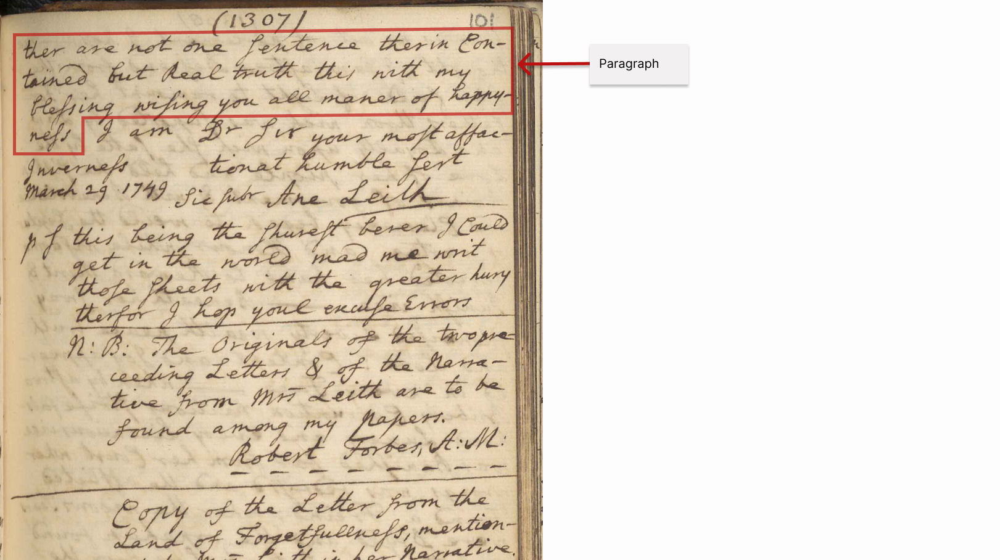
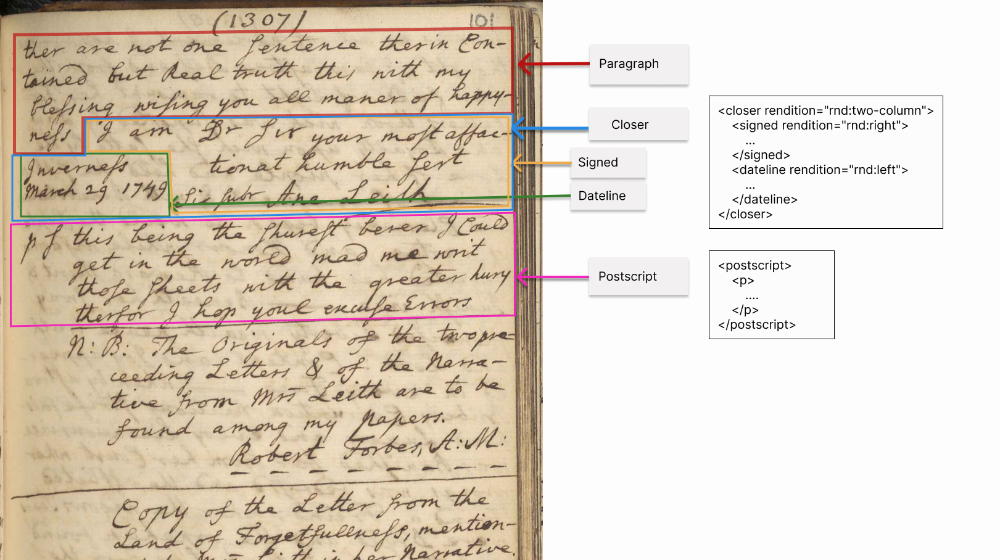

Unceded territory of the səl̓ilw̓ətaʔɬ (Tsleil-Waututh), kʷikʷəƛ̓əm (Kwikwetlem), Sḵwx̱wú7mesh Úxwumixw (Squamish), and xʷməθkʷəy̓əm (Musqueam) Nations
About Me
- Digital Scholarship Librarian (2026–), Digital Humanities Innovation Lab, SFU Library
- Developer, DHIL (2020–2026), and still building things
- BA in English from UVic; MA in English from UBC; MLIS
About Me
Areas of support
Scholarly digital projects (digital exhibits, critical editions, databases, thematic research collections); faculty and graduate student research in the Digital Humanities; integrated teaching and digital research
Research interests
New forms of scholarly publishing; digital infrastructure and sustainability; "CanLit" (esp. Indigenous and diasporic literatures); Asian Canadian studies; STS; critical archival practice
Today
- From manuscript to type to markup
- Markup as interpretation
- XML and the TEI
- Break
- Describing your manuscript
- Encoding your poem
- What next?
Today's argument
- Markup records what something is, not how it should look
- An encoded text carries its interpretation with it
- So encoding is a critical, editorial act
Part 2
From manuscript to type to markup
You've already made this text twice
- Transcribing it from the manuscript
- Setting it in type
- Today: encoding it
Discussion
- What did the manuscript have that your printed version doesn't?
- What did you have to decide when you set it in type?
- Who is your edition for?
Part 3
Markup as interpretation
Not just putting it online
- Digitizing for access: a scan or a web page
- Encoding as representation: a model that says what each part is
digital editions force us to confront the very same set of issues with far more rigor and clarityJulia Flanders, "The Productive Unease of 21st-century Digital Scholarship," Digital Humanities Quarterly 3.3 (2009), para. 22.
What is markup?
Markup refers to a structured way to identify and separate textual information
The most common form of markup is a structure called XML (aka "pointy brackets")
Encoding, markup, et cetera...
At its core, marking up text is a way of identifying and differentiating bits of text from other bits of texts.
"Lines written in early spring," Lyrical Ballads (1798), p. 115. Facsimile from https://lyrical-ballads.dhil.lib.sfu.ca/early-spring.htmlWe do this all the time!
Italics for emphasis
Underlining for titles
Bold for extra-emphasis
Quotation marks for outside attribution
or skepticism
All capitals to YELL
And in manuscript: crossing out, writing above the line
Try it on paper (5 minutes)
On your poem, bracket and label every part you can see.
Make up your own labels.
Semantics v. Display
Semantic or Descriptive markup = encoding what the thing is
Display or Presentational markup = encoding how you want that thing to look
Encoding preserves interpretation
- A printed edition keeps its decisions in the apparatus, or makes them silently
- An encoded text records each decision where it was made
- The decisions stay in the file, open to a reader who disagrees
The Process of Marking Up Texts
The process is analytical, strategic, and interpretive.
It is analytical, in identifying a set of components into which the text can meaningfully be broken and whose relationship can be represented
Markup is strategic, in that text encoding is always aimed (deliberately or by default) at some intellectual or practical goal
And markup is interpretive, in that the act of encoding will always take place through a connection between an observing individual and a source object.
A model is an argument
- To encode a text is to model it: what are its parts, and which matter?
- Every model leaves things out
- The TEI is a shared model, one you adapt and argue with
Encoding Texts as Literary Criticism
Marking up text is an assertion of your knowledge and your interpretation of the text
What does the text (form and content) express?
Every edition is an argument
Copy-text and intention
Greg, Bowers, Tanselle
The social text
McKenzie, McGann
Markup makes your position explicit, element by element
Part 4
XML and the TEI
XML
XML = eXtensible Markup Language
XML is not a set language unto itself, but a grammar
XML
There is nothing inherent about the function of XML
It is purely a structure--a way of organizing
Anyone can conceive of an XML dialect (e.g. it is extensible)
XML
XML is hierarchical
XML is a tree-like structure
And is often described in genealogical terms
XML
The two pointy brackets is called an element
E.g. <title> = the title element
All elements have start and end tags
<title> is the start tag and </title> is the end tag
Elements can also have attributes (@edition)
Attributes must have a value: <book edition="1798">
All XML structures have a "root" (or container) element
Elements nest and use genealogical terms
The stanza element is a parent of line
<line>s are children of <stanza>
XML Explained
Elements cannot overlap
✅ <stanza><line>Bring sad thoughts to the mind.</line></stanza>
❌ <stanza><line>Bring sad thoughts to the mind.</stanza></line>
Well-formed and valid
- Well-formed: follows XML's rules (tags close, elements nest, & is written &)
- Valid: also follows a schema's rules, here the TEI's
- oXygen checks both
TEI and the "Hierarchy"
- Text = "Ordered Hierarchy of Content Objects" [OHCO] (DeRose et al., 1990)
But this can get tricky...





LINES
WRITTEN IN EARLY SPRING.
I heard a thousand blended notes,
While in a grove I sate reclined,
In that sweet mood when pleasant thoughts
Bring sad thoughts to the mind.
To her fair works did nature link
The human soul that through me ran ;
And much it griev’d my heart to think
What man has made of man.
And in manuscript
The TEI
The TEI
A set of guidelines for encoding text
A non-profit organization
A community or consortium of users
Website: https://tei-c.org/
The TEI
Offers a rich vocabulary and method to encode:
Bibliographic and structural features: page breaks, headers, footers, page numbers, line breaks, divisions, paragraphs, line groups, etc
Interpretative features: stage movement, emphasis, place names, proper names, dialogue direction, etc
Editorial apparatus: hands, witnesses, collation, gaps, additions, deletions, etc
Linguistic features: morphemes, feature structures, orthographic form, etc
Spoken features: incidents, pauses, shifts, "communicative phenomenon", etc
Metadata: various classification schemes, provenance, manuscript description, etc
+++++
Some Examples
The Lyon in Mourning Project
Lyrical Ballads (1798)
Digital Victorian Periodical Poetry
Walt Whitman Archive
Components of a (basic) TEI file
- Root <TEI> element
- A <teiHeader> that describes both the file and the primary source that you are transcribing (if applicable)
- Optionally, a <facsimile> element that describes the facsimile you are encoding
- A <text> that contains the text of the document
- Within text, you can have a <front>, <body>, or <back>
Part 5
Break
10 minutes
Then: download poem-template.xml and open it in oXygen
Getting set up in oXygen
- Download poem-template.xml
- Open it in oXygen (File → Open)
- Save a copy as yourname-poem.xml
No download? File → New → Framework templates → TEI P5 → All
oXygen Tips
To tag element quickly, highlight + Command + E (Ctrl + E) and type in element name
Always make sure the file is valid! Validate, validate, validate! (Red checkmark OR Command + Shift + V)
Part 6
Describing your manuscript
The header describes your source
- <sourceDesc> = the source itself
- For a manuscript: <msDesc>, a structured manuscript description
A manuscript description
<msIdentifier>: where it is and what it's called<msContents>/<msItem>: what's in it<physDesc>: what it is physically (support, extent, hands)<history>: where it's been (origin, provenance, acquisition)
Discussion
- You're all encoding poems from the same manuscript. Should every file repeat this?
- What would you record that the TEI doesn't seem to ask for?
Part 7
Encoding your poem
Encoding Practice
- Structure: title, stanzas, lines
- The page: where pages and lines begin
- The hand: added, crossed out, hard to read, someone else's
- Your reading: spelling, abbreviations, names, notes
- The header: what you know about the manuscript
| Element | Example | |
|---|---|---|
| Structure | <head> <lg> <l> | <lg type="stanza"><l n="1">…</l></lg> |
| Page | <pb/> <lb/> | <pb n="12v"/> |
| Hand | <del> <add> <subst> | <subst><del>Face</del><add place="above">Head</add></subst> |
| Hand | <unclear> <gap/> | <unclear reason="faded">…</unclear>, <gap reason="illegible"/> |
| Hand | <hi> | <hi rend="underline">never</hi> |
| Reading | <choice> | <choice><abbr>qch</abbr><expan>which</expan></choice> |
| Reading | <choice> | <choice><sic>recieve</sic><corr>receive</corr></choice> |
| Reading | <supplied> | <supplied reason="damage">a</supplied> |
| Reading | <persName> <placeName> <rs> | <placeName>Edinburgh</placeName> |
| Reading | <note> | <note type="editorial">…</note> |
Authorial Interventions
- add = an addition to the text
- del = a deletion within the text
- subst = a substitution (e.g. add + del)
- These can also be placed on the page (using @place)
- They can also be identified as belonging to different hands (using @hand)
Editorial Interventions
- supplied = text supplied for editorial reasons
- gap = text omitted for editorial reasons
- note = Usually, an editorial note (but not always)
Part 8
What next?
Show and tell
What did you encode? What did you leave out? What did you get back?
Compare with the professionals
What did they decide differently?
What to encode?
Input =/= Output
Encode what you care about and what you have time to encode
If you don't encode it, you can't do much with it
But: you don't need to encode or retain everything
But if you tag it, you can aggregate it
TEI
Note that the TEI is huge (586 elements)
No one uses the entirety of the TEI tagset
Individual projects customize the TEI for their own needs, usually using a small subset of the overall tagset
TEI Schema and Customization
Customization of the TEI schema is crucial
It provides useful guidance for new encoders
It clearly describes how you use elements
It narrates your intentions to be interoperable
Your file will outlast the software
- Plain text in an open, documented standard
- One file: a web page, a print edition, a dataset
- Send it to your instructor: 30 poems encoded the same way are the start of a class edition
Okay, I'm convinced...where do I start?
VSCode + Scholarly XML Extension
https://marketplace.visualstudio.com/items?itemName=raffazizzi.sxml
LEAF-Writer
My stuff is encoded...what can I do with it?
TEI Garage
CETEIcean 🐳
Learning more about the TEI
- The TEI Guidelines: https://www.tei-c.org/release/doc/tei-p5-doc/en/html/index.html
- TEI By Example: https://teibyexample.org/
- TEI listServ: https://listserv.brown.edu/cgi-bin/wa?A0=TEI-L
- Julia Flanders, "The Productive Unease of 21st-century Digital Scholarship," DHQ 3.3 (2009)
- Flanders and Jannidis, eds., The Shape of Data in Digital Humanities (Routledge, 2019)
Thanks!
Questions?
takeda@sfu.ca | dhil@sfu.ca | https://dhil.lib.sfu.ca